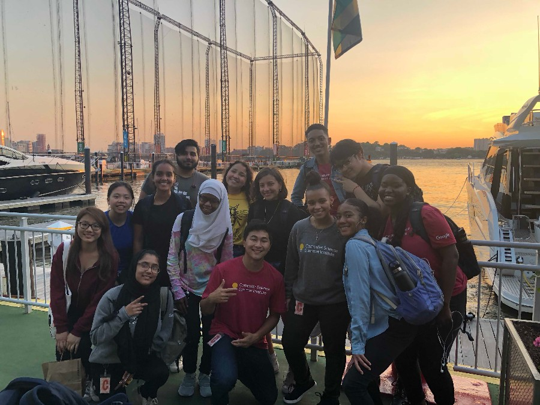
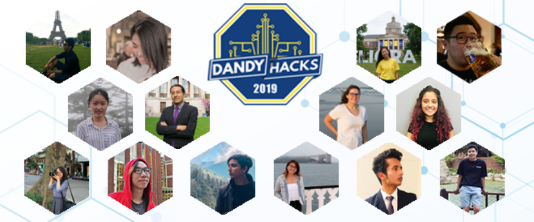
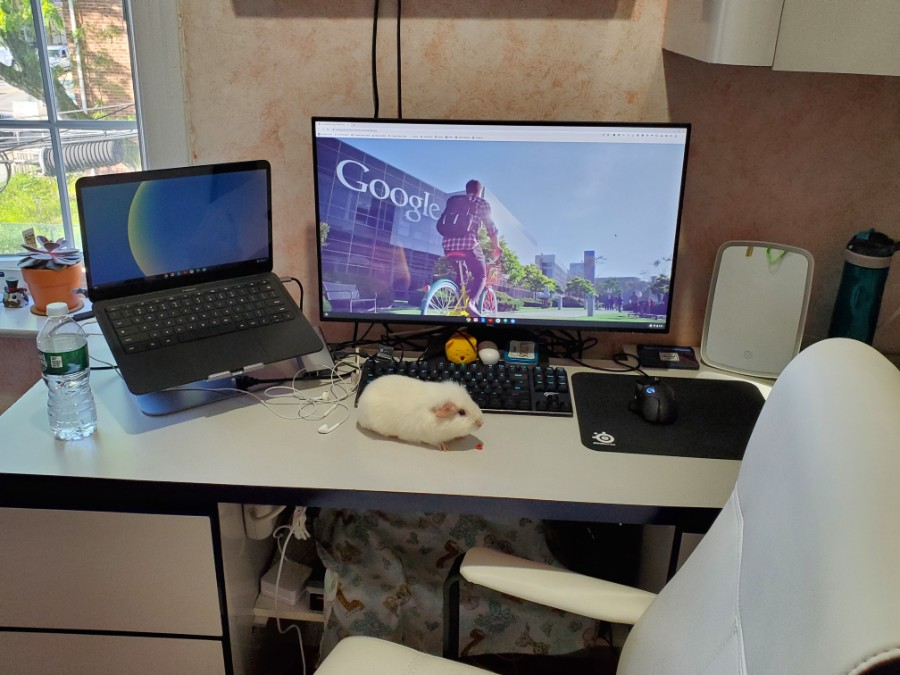
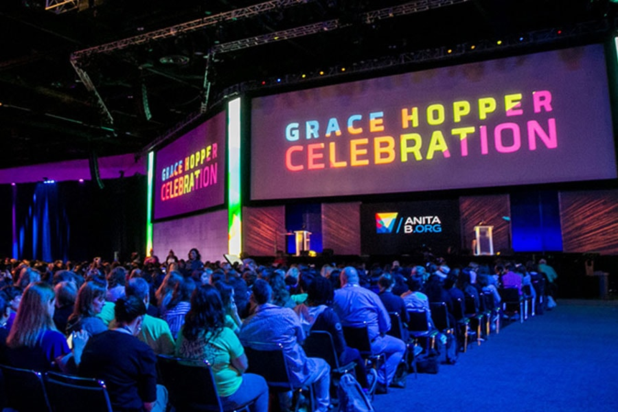

2018 Google’s CSSI Program

I participated in Google’s CSSI Program in Google’s NYC office.
Google's Computer Science Summer Institute is a three-week
introduction to computer science for graduating high school
seniors with a passion for technology — especially students
from historically underrepresented groups in the field. This
was an eye opening experience because it was my first contact
with CS in the industry. I was able to build personal networks
and friendships in a unique environment filled with people from
different backgrounds. I still keep in touch with my peers in
the program!
2019 U of R’s Dandyhacks

This is the University of Rochester’s annual 36-hour hackathon.
I was part of the hackathon’s organizing team - team of 15 students.
We had over 100 participants come from everywhere to attend the event.
It was a thrilling experience to work with sponsors, food vendors,
professors, the university, my team members, and most importantly,
the hackers themselves.
2019 Google’s EP Internship

Google’s Engineering Practicum Internship has been renamed to STEP
and it’s exactly the same program. During the internship, I was on
the Geo Team, specifically the Google My Business (GMB) iOS team.
I was working on a project that creates a better experience for
merchants to add features to their business profile.
2020 Google’s STEP Internship

This year is a little different from the others. During the time of
the pandemic, Google is hosting their internships virtually. I am
currently working at my home in NYC. The internship project has
changed to open source and I am on the Google Cloud team,
specifically the Proctor team. The project will be a (flexible)
capstone project and I am excited to be working with 2 other STEP
interns, my hosts, and my team members.
2020 Grace Hopper Celebration Conference (Virtual)

This year’s GHC will be hosting their event virtually. The Grace
Hopper Celebration of Women in Computing is a series of conferences
designed to bring the research and career interests of women in
computing to the forefront. It is the world's largest gathering of
women in computing. There will be more information upcoming about
this event since it will be hosted virtually.